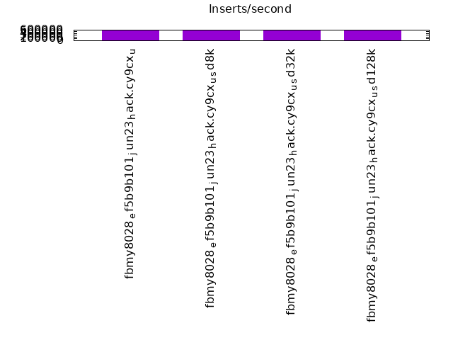
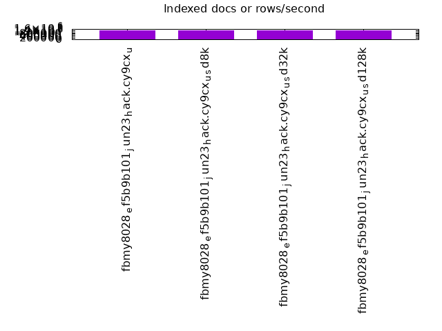
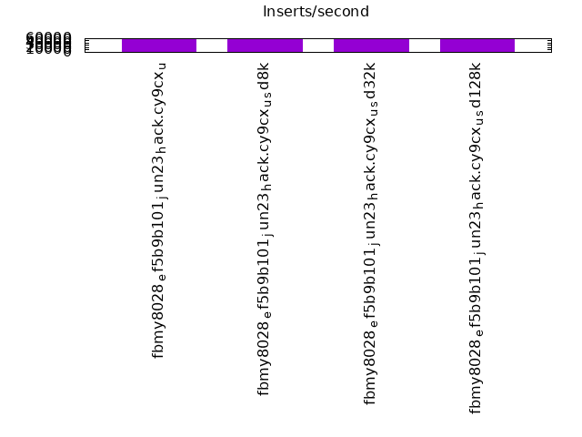
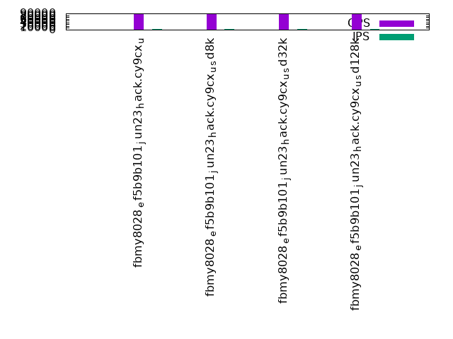
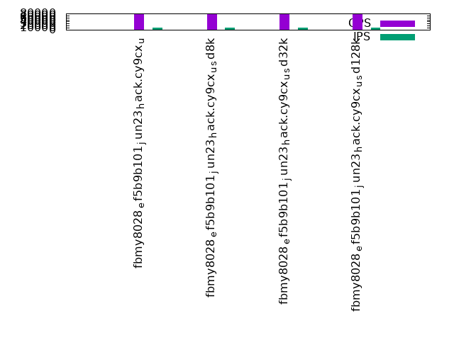
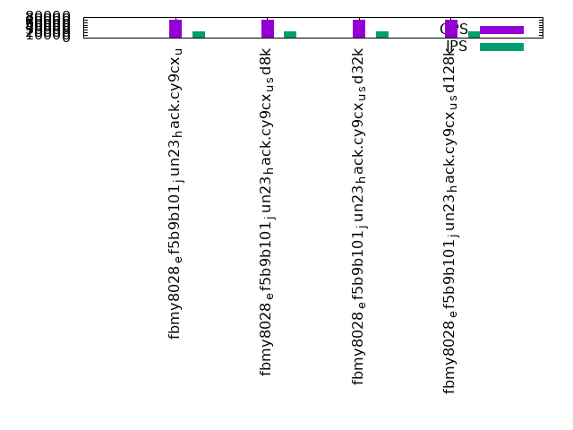

This is a report for the insert benchmark with 480M docs and 24 client(s). It is generated by scripts (bash, awk, sed) and Tufte might not be impressed. An overview of the insert benchmark is here and a short update is here. Below, by DBMS, I mean DBMS+version.config. An example is my8020.c10b40 where my means MySQL, 8020 is version 8.0.20 and c10b40 is the name for the configuration file.
The test server has 80 cores, hyperthreads enabled, 256G RAM and fast NVMe with XFS. The benchmark was run with 24 clients and there were 1 or 3 connections per client (1 for queries or inserts without rate limits, 1+1 for rate limited inserts+deletes). There are 24 tables, with a client per table. It loads 20M rows per-table without secondary indexes, creates secondary indexes, then inserts 50M rows per-table with a delete per insert to avoid growing the table. It then does 3 read+write tests for 3600s each that do queries as fast as possible with 100, 500 and then 1000 inserts/second/client concurrent with the queries and 1000 deletes/second to avoid growing the table. The database is cached by RocksDB.
The tested DBMS are:
The numbers are inserts/s for l.i0 and l.i1, indexed docs (or rows) /s for l.x and queries/s for q100, q500, q1000. The values are the average rate over the entire test for inserts (IPS) and queries (QPS). The range of values for IPS and QPS is split into 3 parts: bottom 25%, middle 50%, top 25%. Values in the bottom 25% have a red background, values in the top 25% have a green background and values in the middle have no color. A gray background is used for values that can be ignored because the DBMS did not sustain the target insert rate. Red backgrounds are not used when the minimum value is within 80% of the max value.
| dbms | l.i0 | l.x | l.i1 | q100.1 | q500.1 | q1000.1 |
|---|---|---|---|---|---|---|
| fbmy8028_ef5b9b101_jun23_hack.cy9cx_u | 542986 | 1424629 | 57167 | 85962 | 78737 | 70439 |
| fbmy8028_ef5b9b101_jun23_hack.cy9cx_u_sd8k | 556844 | 1420414 | 57108 | 85978 | 77819 | 70251 |
| fbmy8028_ef5b9b101_jun23_hack.cy9cx_u_sd32k | 559440 | 1420414 | 57402 | 85617 | 77630 | 70149 |
| fbmy8028_ef5b9b101_jun23_hack.cy9cx_u_sd128k | 557491 | 1424629 | 57378 | 85606 | 78012 | 70540 |
This table has relative throughput, throughput for the DBMS relative to the DBMS in the first line, using the absolute throughput from the previous table. Values less than 0.95 have a yellow background. Values greater than 1.05 have a blue background.
| dbms | l.i0 | l.x | l.i1 | q100.1 | q500.1 | q1000.1 |
|---|---|---|---|---|---|---|
| fbmy8028_ef5b9b101_jun23_hack.cy9cx_u | 1.00 | 1.00 | 1.00 | 1.00 | 1.00 | 1.00 |
| fbmy8028_ef5b9b101_jun23_hack.cy9cx_u_sd8k | 1.03 | 1.00 | 1.00 | 1.00 | 0.99 | 1.00 |
| fbmy8028_ef5b9b101_jun23_hack.cy9cx_u_sd32k | 1.03 | 1.00 | 1.00 | 1.00 | 0.99 | 1.00 |
| fbmy8028_ef5b9b101_jun23_hack.cy9cx_u_sd128k | 1.03 | 1.00 | 1.00 | 1.00 | 0.99 | 1.00 |
This lists the average rate of inserts/s for the tests that do inserts concurrent with queries. For such tests the query rate is listed in the table above. The read+write tests are setup so that the insert rate should match the target rate every second. Cells that are not at least 95% of the target have a red background to indicate a failure to satisfy the target.
| dbms | q100.1 | q500.1 | q1000.1 |
|---|---|---|---|
| fbmy8028_ef5b9b101_jun23_hack.cy9cx_u | 2381 | 11907 | 23828 |
| fbmy8028_ef5b9b101_jun23_hack.cy9cx_u_sd8k | 2381 | 11907 | 23834 |
| fbmy8028_ef5b9b101_jun23_hack.cy9cx_u_sd32k | 2381 | 11911 | 23828 |
| fbmy8028_ef5b9b101_jun23_hack.cy9cx_u_sd128k | 2381 | 11907 | 23834 |
| target | 2400 | 12000 | 24000 |
l.i0: load without secondary indexes. Graphs for performance per 1-second interval are here.
Average throughput:
Insert response time histogram: each cell has the percentage of responses that take <= the time in the header and max is the max response time in seconds. For the max column values in the top 25% of the range have a red background and in the bottom 25% of the range have a green background. The red background is not used when the min value is within 80% of the max value.
| dbms | 256us | 1ms | 4ms | 16ms | 64ms | 256ms | 1s | 4s | 16s | gt | max |
|---|---|---|---|---|---|---|---|---|---|---|---|
| fbmy8028_ef5b9b101_jun23_hack.cy9cx_u | 50.251 | 49.706 | 0.001 | 0.042 | 0.110 | ||||||
| fbmy8028_ef5b9b101_jun23_hack.cy9cx_u_sd8k | 53.087 | 46.869 | 0.001 | 0.042 | 0.127 | ||||||
| fbmy8028_ef5b9b101_jun23_hack.cy9cx_u_sd32k | 54.316 | 45.641 | 0.001 | 0.042 | 0.178 | ||||||
| fbmy8028_ef5b9b101_jun23_hack.cy9cx_u_sd128k | 53.142 | 46.815 | 0.001 | 0.042 | 0.098 |
Performance metrics for the DBMS listed above. Some are normalized by throughput, others are not. Legend for results is here.
ips qps rps rmbps wps wmbps rpq rkbpq wpi wkbpi csps cpups cspq cpupq dbgb1 dbgb2 rss maxop p50 p99 tag 542986 0 0 0.0 1731.0 122.7 0.000 0.000 0.003 0.231 351323 39.1 0.647 58 15.2 16.6 3.9 0.110 23577 13685 480m.fbmy8028_ef5b9b101_jun23_hack.cy9cx_u 556844 0 0 0.0 1784.4 129.7 0.000 0.000 0.003 0.239 340092 39.8 0.611 57 15.3 16.6 3.9 0.127 23876 15684 480m.fbmy8028_ef5b9b101_jun23_hack.cy9cx_u_sd8k 559440 0 0 0.0 1808.6 131.3 0.000 0.000 0.003 0.240 334243 39.8 0.597 57 15.6 16.9 4.0 0.178 24376 16284 480m.fbmy8028_ef5b9b101_jun23_hack.cy9cx_u_sd32k 557491 0 0 0.0 1801.5 129.2 0.000 0.000 0.003 0.237 333075 39.8 0.597 57 15.6 16.9 3.9 0.098 23876 15085 480m.fbmy8028_ef5b9b101_jun23_hack.cy9cx_u_sd128k
l.x: create secondary indexes.
Average throughput:
Performance metrics for the DBMS listed above. Some are normalized by throughput, others are not. Legend for results is here.
ips qps rps rmbps wps wmbps rpq rkbpq wpi wkbpi csps cpups cspq cpupq dbgb1 dbgb2 rss maxop p50 p99 tag 1424629 0 29 0.2 1832.2 127.4 0.000 0.000 0.001 0.092 35721 28.6 0.025 16 32.3 32.5 33.4 0.003 NA NA 480m.fbmy8028_ef5b9b101_jun23_hack.cy9cx_u 1420414 0 29 0.2 1803.1 126.3 0.000 0.000 0.001 0.091 35278 27.8 0.025 16 32.3 32.5 33.4 0.003 NA NA 480m.fbmy8028_ef5b9b101_jun23_hack.cy9cx_u_sd8k 1420414 0 29 0.2 1807.3 127.4 0.000 0.000 0.001 0.092 33580 27.4 0.024 15 32.3 32.5 33.5 0.003 NA NA 480m.fbmy8028_ef5b9b101_jun23_hack.cy9cx_u_sd32k 1424629 0 30 0.2 1829.9 131.0 0.000 0.000 0.001 0.094 34135 28.2 0.024 16 32.3 32.5 33.5 0.004 NA NA 480m.fbmy8028_ef5b9b101_jun23_hack.cy9cx_u_sd128k
l.i1: continue load after secondary indexes created. Graphs for performance per 1-second interval are here.
Average throughput:
Insert response time histogram: each cell has the percentage of responses that take <= the time in the header and max is the max response time in seconds. For the max column values in the top 25% of the range have a red background and in the bottom 25% of the range have a green background. The red background is not used when the min value is within 80% of the max value.
| dbms | 256us | 1ms | 4ms | 16ms | 64ms | 256ms | 1s | 4s | 16s | gt | max |
|---|---|---|---|---|---|---|---|---|---|---|---|
| fbmy8028_ef5b9b101_jun23_hack.cy9cx_u | 0.025 | 10.867 | 88.636 | 0.465 | 0.007 | 0.367 | |||||
| fbmy8028_ef5b9b101_jun23_hack.cy9cx_u_sd8k | 0.022 | 10.421 | 89.213 | 0.337 | 0.006 | 0.361 | |||||
| fbmy8028_ef5b9b101_jun23_hack.cy9cx_u_sd32k | 0.023 | 11.065 | 88.524 | 0.366 | 0.019 | 0.001 | 1.360 | ||||
| fbmy8028_ef5b9b101_jun23_hack.cy9cx_u_sd128k | 0.024 | 11.048 | 88.541 | 0.362 | 0.025 | 0.832 |
Delete response time histogram: each cell has the percentage of responses that take <= the time in the header and max is the max response time in seconds. For the max column values in the top 25% of the range have a red background and in the bottom 25% of the range have a green background. The red background is not used when the min value is within 80% of the max value.
| dbms | 256us | 1ms | 4ms | 16ms | 64ms | 256ms | 1s | 4s | 16s | gt | max |
|---|---|---|---|---|---|---|---|---|---|---|---|
| fbmy8028_ef5b9b101_jun23_hack.cy9cx_u | 0.026 | 10.864 | 88.638 | 0.465 | 0.007 | 0.664 | |||||
| fbmy8028_ef5b9b101_jun23_hack.cy9cx_u_sd8k | 0.022 | 10.480 | 89.153 | 0.338 | 0.006 | 0.623 | |||||
| fbmy8028_ef5b9b101_jun23_hack.cy9cx_u_sd32k | 0.024 | 11.133 | 88.456 | 0.367 | 0.020 | 0.001 | 1.360 | ||||
| fbmy8028_ef5b9b101_jun23_hack.cy9cx_u_sd128k | 0.026 | 11.195 | 88.391 | 0.362 | 0.025 | 0.832 |
Performance metrics for the DBMS listed above. Some are normalized by throughput, others are not. Legend for results is here.
ips qps rps rmbps wps wmbps rpq rkbpq wpi wkbpi csps cpups cspq cpupq dbgb1 dbgb2 rss maxop p50 p99 tag 57167 0 75 1.0 1194.6 76.8 0.001 0.018 0.021 1.376 178525 18.4 3.123 257 41.4 42.4 178.2 0.367 2448 400 480m.fbmy8028_ef5b9b101_jun23_hack.cy9cx_u 57108 0 54 1.3 1274.4 82.4 0.001 0.023 0.022 1.477 178026 18.6 3.117 261 49.7 50.7 178.7 0.361 2448 449 480m.fbmy8028_ef5b9b101_jun23_hack.cy9cx_u_sd8k 57402 0 52 1.4 1273.9 81.7 0.001 0.026 0.022 1.457 174821 18.6 3.046 259 56.5 57.5 178.7 1.360 2497 350 480m.fbmy8028_ef5b9b101_jun23_hack.cy9cx_u_sd32k 57378 0 47 1.2 1286.7 83.7 0.001 0.022 0.022 1.495 168705 18.5 2.940 258 41.7 42.7 178.6 0.832 2497 400 480m.fbmy8028_ef5b9b101_jun23_hack.cy9cx_u_sd128k
q100.1: range queries with 100 insert/s per client. Graphs for performance per 1-second interval are here.
Average throughput:
Query response time histogram: each cell has the percentage of responses that take <= the time in the header and max is the max response time in seconds. For max values in the top 25% of the range have a red background and in the bottom 25% of the range have a green background. The red background is not used when the min value is within 80% of the max value.
| dbms | 256us | 1ms | 4ms | 16ms | 64ms | 256ms | 1s | 4s | 16s | gt | max |
|---|---|---|---|---|---|---|---|---|---|---|---|
| fbmy8028_ef5b9b101_jun23_hack.cy9cx_u | 46.491 | 53.507 | 0.002 | nonzero | nonzero | 0.018 | |||||
| fbmy8028_ef5b9b101_jun23_hack.cy9cx_u_sd8k | 46.646 | 53.352 | 0.002 | nonzero | nonzero | 0.023 | |||||
| fbmy8028_ef5b9b101_jun23_hack.cy9cx_u_sd32k | 45.643 | 54.355 | 0.002 | nonzero | nonzero | 0.021 | |||||
| fbmy8028_ef5b9b101_jun23_hack.cy9cx_u_sd128k | 45.523 | 54.475 | 0.002 | nonzero | nonzero | 0.059 |
Insert response time histogram: each cell has the percentage of responses that take <= the time in the header and max is the max response time in seconds. For max values in the top 25% of the range have a red background and in the bottom 25% of the range have a green background. The red background is not used when the min value is within 80% of the max value.
| dbms | 256us | 1ms | 4ms | 16ms | 64ms | 256ms | 1s | 4s | 16s | gt | max |
|---|---|---|---|---|---|---|---|---|---|---|---|
| fbmy8028_ef5b9b101_jun23_hack.cy9cx_u | 99.656 | 0.344 | 0.008 | ||||||||
| fbmy8028_ef5b9b101_jun23_hack.cy9cx_u_sd8k | 99.872 | 0.125 | 0.003 | 0.057 | |||||||
| fbmy8028_ef5b9b101_jun23_hack.cy9cx_u_sd32k | 99.900 | 0.100 | 0.008 | ||||||||
| fbmy8028_ef5b9b101_jun23_hack.cy9cx_u_sd128k | 96.197 | 3.803 | 0.010 |
Delete response time histogram: each cell has the percentage of responses that take <= the time in the header and max is the max response time in seconds. For max values in the top 25% of the range have a red background and in the bottom 25% of the range have a green background. The red background is not used when the min value is within 80% of the max value.
| dbms | 256us | 1ms | 4ms | 16ms | 64ms | 256ms | 1s | 4s | 16s | gt | max |
|---|---|---|---|---|---|---|---|---|---|---|---|
| fbmy8028_ef5b9b101_jun23_hack.cy9cx_u | 99.815 | 0.183 | 0.002 | 0.040 | |||||||
| fbmy8028_ef5b9b101_jun23_hack.cy9cx_u_sd8k | 99.927 | 0.065 | 0.008 | 0.057 | |||||||
| fbmy8028_ef5b9b101_jun23_hack.cy9cx_u_sd32k | 99.950 | 0.049 | 0.001 | 0.077 | |||||||
| fbmy8028_ef5b9b101_jun23_hack.cy9cx_u_sd128k | 97.930 | 2.068 | 0.002 | 0.030 |
Performance metrics for the DBMS listed above. Some are normalized by throughput, others are not. Legend for results is here.
ips qps rps rmbps wps wmbps rpq rkbpq wpi wkbpi csps cpups cspq cpupq dbgb1 dbgb2 rss maxop p50 p99 tag 2381 85962 6 0.1 75.4 4.4 0.000 0.001 0.032 1.907 358976 32.6 4.176 303 36.6 38.6 179.5 0.018 3596 3229 480m.fbmy8028_ef5b9b101_jun23_hack.cy9cx_u 2381 85978 18 0.2 235.6 14.9 0.000 0.003 0.099 6.394 360749 33.4 4.196 311 37.4 39.4 180.6 0.023 3644 3277 480m.fbmy8028_ef5b9b101_jun23_hack.cy9cx_u_sd8k 2381 85617 62 0.7 109.1 6.5 0.001 0.008 0.046 2.797 358411 32.7 4.186 306 36.0 38.0 179.5 0.021 3580 3197 480m.fbmy8028_ef5b9b101_jun23_hack.cy9cx_u_sd32k 2381 85606 1 0.0 84.4 5.0 0.000 0.000 0.035 2.166 357628 32.7 4.178 306 36.0 38.0 179.7 0.059 3598 3213 480m.fbmy8028_ef5b9b101_jun23_hack.cy9cx_u_sd128k
q500.1: range queries with 500 insert/s per client. Graphs for performance per 1-second interval are here.
Average throughput:
Query response time histogram: each cell has the percentage of responses that take <= the time in the header and max is the max response time in seconds. For max values in the top 25% of the range have a red background and in the bottom 25% of the range have a green background. The red background is not used when the min value is within 80% of the max value.
| dbms | 256us | 1ms | 4ms | 16ms | 64ms | 256ms | 1s | 4s | 16s | gt | max |
|---|---|---|---|---|---|---|---|---|---|---|---|
| fbmy8028_ef5b9b101_jun23_hack.cy9cx_u | 27.600 | 72.397 | 0.003 | nonzero | nonzero | 0.001 | 0.087 | ||||
| fbmy8028_ef5b9b101_jun23_hack.cy9cx_u_sd8k | 25.754 | 74.241 | 0.004 | nonzero | nonzero | 0.001 | 0.100 | ||||
| fbmy8028_ef5b9b101_jun23_hack.cy9cx_u_sd32k | 25.243 | 74.753 | 0.004 | nonzero | nonzero | 0.001 | 0.110 | ||||
| fbmy8028_ef5b9b101_jun23_hack.cy9cx_u_sd128k | 26.122 | 73.873 | 0.004 | nonzero | nonzero | 0.001 | 0.089 |
Insert response time histogram: each cell has the percentage of responses that take <= the time in the header and max is the max response time in seconds. For max values in the top 25% of the range have a red background and in the bottom 25% of the range have a green background. The red background is not used when the min value is within 80% of the max value.
| dbms | 256us | 1ms | 4ms | 16ms | 64ms | 256ms | 1s | 4s | 16s | gt | max |
|---|---|---|---|---|---|---|---|---|---|---|---|
| fbmy8028_ef5b9b101_jun23_hack.cy9cx_u | 21.075 | 77.467 | 1.457 | 0.001 | 0.091 | ||||||
| fbmy8028_ef5b9b101_jun23_hack.cy9cx_u_sd8k | 3.517 | 28.595 | 67.881 | 0.007 | 0.116 | ||||||
| fbmy8028_ef5b9b101_jun23_hack.cy9cx_u_sd32k | 4.595 | 24.617 | 70.783 | 0.005 | 0.127 | ||||||
| fbmy8028_ef5b9b101_jun23_hack.cy9cx_u_sd128k | 14.464 | 48.382 | 37.147 | 0.007 | 0.111 |
Delete response time histogram: each cell has the percentage of responses that take <= the time in the header and max is the max response time in seconds. For max values in the top 25% of the range have a red background and in the bottom 25% of the range have a green background. The red background is not used when the min value is within 80% of the max value.
| dbms | 256us | 1ms | 4ms | 16ms | 64ms | 256ms | 1s | 4s | 16s | gt | max |
|---|---|---|---|---|---|---|---|---|---|---|---|
| fbmy8028_ef5b9b101_jun23_hack.cy9cx_u | 22.922 | 75.626 | 1.449 | 0.003 | 0.214 | ||||||
| fbmy8028_ef5b9b101_jun23_hack.cy9cx_u_sd8k | 4.209 | 28.332 | 67.451 | 0.008 | 0.116 | ||||||
| fbmy8028_ef5b9b101_jun23_hack.cy9cx_u_sd32k | 5.110 | 24.467 | 70.418 | 0.005 | 0.123 | ||||||
| fbmy8028_ef5b9b101_jun23_hack.cy9cx_u_sd128k | 16.120 | 47.021 | 36.852 | 0.007 | 0.114 |
Performance metrics for the DBMS listed above. Some are normalized by throughput, others are not. Legend for results is here.
ips qps rps rmbps wps wmbps rpq rkbpq wpi wkbpi csps cpups cspq cpupq dbgb1 dbgb2 rss maxop p50 p99 tag 11907 78737 18 0.3 320.8 19.7 0.000 0.003 0.027 1.691 338754 34.8 4.302 354 36.8 38.2 183.1 0.087 3309 2925 480m.fbmy8028_ef5b9b101_jun23_hack.cy9cx_u 11907 77819 11 0.2 346.2 21.3 0.000 0.002 0.029 1.829 339821 35.2 4.367 362 36.2 37.6 184.0 0.100 3245 2813 480m.fbmy8028_ef5b9b101_jun23_hack.cy9cx_u_sd8k 11911 77630 10 0.2 337.4 20.8 0.000 0.003 0.028 1.792 339047 35.2 4.367 363 36.3 37.8 183.1 0.110 3245 2845 480m.fbmy8028_ef5b9b101_jun23_hack.cy9cx_u_sd32k 11907 78012 10 0.2 330.7 20.5 0.000 0.002 0.028 1.759 338485 35.1 4.339 360 36.4 37.8 183.0 0.089 3261 2861 480m.fbmy8028_ef5b9b101_jun23_hack.cy9cx_u_sd128k
q1000.1: range queries with 1000 insert/s per client. Graphs for performance per 1-second interval are here.
Average throughput:
Query response time histogram: each cell has the percentage of responses that take <= the time in the header and max is the max response time in seconds. For max values in the top 25% of the range have a red background and in the bottom 25% of the range have a green background. The red background is not used when the min value is within 80% of the max value.
| dbms | 256us | 1ms | 4ms | 16ms | 64ms | 256ms | 1s | 4s | 16s | gt | max |
|---|---|---|---|---|---|---|---|---|---|---|---|
| fbmy8028_ef5b9b101_jun23_hack.cy9cx_u | 12.392 | 87.589 | 0.019 | nonzero | nonzero | 0.064 | |||||
| fbmy8028_ef5b9b101_jun23_hack.cy9cx_u_sd8k | 12.219 | 87.762 | 0.019 | nonzero | nonzero | nonzero | 0.077 | ||||
| fbmy8028_ef5b9b101_jun23_hack.cy9cx_u_sd32k | 12.200 | 87.780 | 0.020 | nonzero | nonzero | nonzero | 0.090 | ||||
| fbmy8028_ef5b9b101_jun23_hack.cy9cx_u_sd128k | 12.651 | 87.330 | 0.019 | nonzero | nonzero | nonzero | 0.071 |
Insert response time histogram: each cell has the percentage of responses that take <= the time in the header and max is the max response time in seconds. For max values in the top 25% of the range have a red background and in the bottom 25% of the range have a green background. The red background is not used when the min value is within 80% of the max value.
| dbms | 256us | 1ms | 4ms | 16ms | 64ms | 256ms | 1s | 4s | 16s | gt | max |
|---|---|---|---|---|---|---|---|---|---|---|---|
| fbmy8028_ef5b9b101_jun23_hack.cy9cx_u | 2.995 | 11.699 | 85.306 | 0.056 | |||||||
| fbmy8028_ef5b9b101_jun23_hack.cy9cx_u_sd8k | 2.890 | 15.145 | 81.964 | 0.001 | 0.067 | ||||||
| fbmy8028_ef5b9b101_jun23_hack.cy9cx_u_sd32k | 1.381 | 11.984 | 86.632 | 0.003 | 0.127 | ||||||
| fbmy8028_ef5b9b101_jun23_hack.cy9cx_u_sd128k | 2.495 | 8.755 | 88.750 | 0.001 | 0.065 |
Delete response time histogram: each cell has the percentage of responses that take <= the time in the header and max is the max response time in seconds. For max values in the top 25% of the range have a red background and in the bottom 25% of the range have a green background. The red background is not used when the min value is within 80% of the max value.
| dbms | 256us | 1ms | 4ms | 16ms | 64ms | 256ms | 1s | 4s | 16s | gt | max |
|---|---|---|---|---|---|---|---|---|---|---|---|
| fbmy8028_ef5b9b101_jun23_hack.cy9cx_u | 3.021 | 11.715 | 85.263 | nonzero | nonzero | 0.293 | |||||
| fbmy8028_ef5b9b101_jun23_hack.cy9cx_u_sd8k | 2.998 | 15.057 | 81.943 | 0.001 | 0.198 | ||||||
| fbmy8028_ef5b9b101_jun23_hack.cy9cx_u_sd32k | 1.396 | 11.986 | 86.615 | 0.003 | 0.129 | ||||||
| fbmy8028_ef5b9b101_jun23_hack.cy9cx_u_sd128k | 2.507 | 8.785 | 88.707 | 0.002 | nonzero | 0.274 |
Performance metrics for the DBMS listed above. Some are normalized by throughput, others are not. Legend for results is here.
ips qps rps rmbps wps wmbps rpq rkbpq wpi wkbpi csps cpups cspq cpupq dbgb1 dbgb2 rss maxop p50 p99 tag 23828 70439 46 0.5 613.4 37.3 0.001 0.007 0.026 1.601 330765 39.1 4.696 444 37.5 38.2 185.5 0.064 2941 2509 480m.fbmy8028_ef5b9b101_jun23_hack.cy9cx_u 23834 70251 16 0.5 819.3 51.7 0.000 0.007 0.034 2.221 329148 39.7 4.685 452 36.7 37.3 185.9 0.077 2941 2478 480m.fbmy8028_ef5b9b101_jun23_hack.cy9cx_u_sd8k 23828 70149 16 0.5 762.3 48.3 0.000 0.008 0.032 2.075 328767 39.5 4.687 450 36.6 37.3 185.7 0.090 2941 2510 480m.fbmy8028_ef5b9b101_jun23_hack.cy9cx_u_sd32k 23834 70540 17 0.4 650.1 39.9 0.000 0.006 0.027 1.714 329510 39.0 4.671 442 36.9 37.5 185.7 0.071 2957 2541 480m.fbmy8028_ef5b9b101_jun23_hack.cy9cx_u_sd128k
l.i0: load without secondary indexes
Performance metrics for all DBMS, not just the ones listed above. Some are normalized by throughput, others are not. Legend for results is here.
ips qps rps rmbps wps wmbps rpq rkbpq wpi wkbpi csps cpups cspq cpupq dbgb1 dbgb2 rss maxop p50 p99 tag 542986 0 0 0.0 1731.0 122.7 0.000 0.000 0.003 0.231 351323 39.1 0.647 58 15.2 16.6 3.9 0.110 23577 13685 480m.fbmy8028_ef5b9b101_jun23_hack.cy9cx_u 556844 0 0 0.0 1784.4 129.7 0.000 0.000 0.003 0.239 340092 39.8 0.611 57 15.3 16.6 3.9 0.127 23876 15684 480m.fbmy8028_ef5b9b101_jun23_hack.cy9cx_u_sd8k 559440 0 0 0.0 1808.6 131.3 0.000 0.000 0.003 0.240 334243 39.8 0.597 57 15.6 16.9 4.0 0.178 24376 16284 480m.fbmy8028_ef5b9b101_jun23_hack.cy9cx_u_sd32k 557491 0 0 0.0 1801.5 129.2 0.000 0.000 0.003 0.237 333075 39.8 0.597 57 15.6 16.9 3.9 0.098 23876 15085 480m.fbmy8028_ef5b9b101_jun23_hack.cy9cx_u_sd128k
l.x: create secondary indexes
Performance metrics for all DBMS, not just the ones listed above. Some are normalized by throughput, others are not. Legend for results is here.
ips qps rps rmbps wps wmbps rpq rkbpq wpi wkbpi csps cpups cspq cpupq dbgb1 dbgb2 rss maxop p50 p99 tag 1424629 0 29 0.2 1832.2 127.4 0.000 0.000 0.001 0.092 35721 28.6 0.025 16 32.3 32.5 33.4 0.003 NA NA 480m.fbmy8028_ef5b9b101_jun23_hack.cy9cx_u 1420414 0 29 0.2 1803.1 126.3 0.000 0.000 0.001 0.091 35278 27.8 0.025 16 32.3 32.5 33.4 0.003 NA NA 480m.fbmy8028_ef5b9b101_jun23_hack.cy9cx_u_sd8k 1420414 0 29 0.2 1807.3 127.4 0.000 0.000 0.001 0.092 33580 27.4 0.024 15 32.3 32.5 33.5 0.003 NA NA 480m.fbmy8028_ef5b9b101_jun23_hack.cy9cx_u_sd32k 1424629 0 30 0.2 1829.9 131.0 0.000 0.000 0.001 0.094 34135 28.2 0.024 16 32.3 32.5 33.5 0.004 NA NA 480m.fbmy8028_ef5b9b101_jun23_hack.cy9cx_u_sd128k
l.i1: continue load after secondary indexes created
Performance metrics for all DBMS, not just the ones listed above. Some are normalized by throughput, others are not. Legend for results is here.
ips qps rps rmbps wps wmbps rpq rkbpq wpi wkbpi csps cpups cspq cpupq dbgb1 dbgb2 rss maxop p50 p99 tag 57167 0 75 1.0 1194.6 76.8 0.001 0.018 0.021 1.376 178525 18.4 3.123 257 41.4 42.4 178.2 0.367 2448 400 480m.fbmy8028_ef5b9b101_jun23_hack.cy9cx_u 57108 0 54 1.3 1274.4 82.4 0.001 0.023 0.022 1.477 178026 18.6 3.117 261 49.7 50.7 178.7 0.361 2448 449 480m.fbmy8028_ef5b9b101_jun23_hack.cy9cx_u_sd8k 57402 0 52 1.4 1273.9 81.7 0.001 0.026 0.022 1.457 174821 18.6 3.046 259 56.5 57.5 178.7 1.360 2497 350 480m.fbmy8028_ef5b9b101_jun23_hack.cy9cx_u_sd32k 57378 0 47 1.2 1286.7 83.7 0.001 0.022 0.022 1.495 168705 18.5 2.940 258 41.7 42.7 178.6 0.832 2497 400 480m.fbmy8028_ef5b9b101_jun23_hack.cy9cx_u_sd128k
q100.1: range queries with 100 insert/s per client
Performance metrics for all DBMS, not just the ones listed above. Some are normalized by throughput, others are not. Legend for results is here.
ips qps rps rmbps wps wmbps rpq rkbpq wpi wkbpi csps cpups cspq cpupq dbgb1 dbgb2 rss maxop p50 p99 tag 2381 85962 6 0.1 75.4 4.4 0.000 0.001 0.032 1.907 358976 32.6 4.176 303 36.6 38.6 179.5 0.018 3596 3229 480m.fbmy8028_ef5b9b101_jun23_hack.cy9cx_u 2381 85978 18 0.2 235.6 14.9 0.000 0.003 0.099 6.394 360749 33.4 4.196 311 37.4 39.4 180.6 0.023 3644 3277 480m.fbmy8028_ef5b9b101_jun23_hack.cy9cx_u_sd8k 2381 85617 62 0.7 109.1 6.5 0.001 0.008 0.046 2.797 358411 32.7 4.186 306 36.0 38.0 179.5 0.021 3580 3197 480m.fbmy8028_ef5b9b101_jun23_hack.cy9cx_u_sd32k 2381 85606 1 0.0 84.4 5.0 0.000 0.000 0.035 2.166 357628 32.7 4.178 306 36.0 38.0 179.7 0.059 3598 3213 480m.fbmy8028_ef5b9b101_jun23_hack.cy9cx_u_sd128k
q500.1: range queries with 500 insert/s per client
Performance metrics for all DBMS, not just the ones listed above. Some are normalized by throughput, others are not. Legend for results is here.
ips qps rps rmbps wps wmbps rpq rkbpq wpi wkbpi csps cpups cspq cpupq dbgb1 dbgb2 rss maxop p50 p99 tag 11907 78737 18 0.3 320.8 19.7 0.000 0.003 0.027 1.691 338754 34.8 4.302 354 36.8 38.2 183.1 0.087 3309 2925 480m.fbmy8028_ef5b9b101_jun23_hack.cy9cx_u 11907 77819 11 0.2 346.2 21.3 0.000 0.002 0.029 1.829 339821 35.2 4.367 362 36.2 37.6 184.0 0.100 3245 2813 480m.fbmy8028_ef5b9b101_jun23_hack.cy9cx_u_sd8k 11911 77630 10 0.2 337.4 20.8 0.000 0.003 0.028 1.792 339047 35.2 4.367 363 36.3 37.8 183.1 0.110 3245 2845 480m.fbmy8028_ef5b9b101_jun23_hack.cy9cx_u_sd32k 11907 78012 10 0.2 330.7 20.5 0.000 0.002 0.028 1.759 338485 35.1 4.339 360 36.4 37.8 183.0 0.089 3261 2861 480m.fbmy8028_ef5b9b101_jun23_hack.cy9cx_u_sd128k
q1000.1: range queries with 1000 insert/s per client
Performance metrics for all DBMS, not just the ones listed above. Some are normalized by throughput, others are not. Legend for results is here.
ips qps rps rmbps wps wmbps rpq rkbpq wpi wkbpi csps cpups cspq cpupq dbgb1 dbgb2 rss maxop p50 p99 tag 23828 70439 46 0.5 613.4 37.3 0.001 0.007 0.026 1.601 330765 39.1 4.696 444 37.5 38.2 185.5 0.064 2941 2509 480m.fbmy8028_ef5b9b101_jun23_hack.cy9cx_u 23834 70251 16 0.5 819.3 51.7 0.000 0.007 0.034 2.221 329148 39.7 4.685 452 36.7 37.3 185.9 0.077 2941 2478 480m.fbmy8028_ef5b9b101_jun23_hack.cy9cx_u_sd8k 23828 70149 16 0.5 762.3 48.3 0.000 0.008 0.032 2.075 328767 39.5 4.687 450 36.6 37.3 185.7 0.090 2941 2510 480m.fbmy8028_ef5b9b101_jun23_hack.cy9cx_u_sd32k 23834 70540 17 0.4 650.1 39.9 0.000 0.006 0.027 1.714 329510 39.0 4.671 442 36.9 37.5 185.7 0.071 2957 2541 480m.fbmy8028_ef5b9b101_jun23_hack.cy9cx_u_sd128k
Insert response time histogram
256us 1ms 4ms 16ms 64ms 256ms 1s 4s 16s gt max tag 0.000 0.000 50.251 49.706 0.001 0.042 0.000 0.000 0.000 0.000 0.110 fbmy8028_ef5b9b101_jun23_hack.cy9cx_u 0.000 0.000 53.087 46.869 0.001 0.042 0.000 0.000 0.000 0.000 0.127 fbmy8028_ef5b9b101_jun23_hack.cy9cx_u_sd8k 0.000 0.000 54.316 45.641 0.001 0.042 0.000 0.000 0.000 0.000 0.178 fbmy8028_ef5b9b101_jun23_hack.cy9cx_u_sd32k 0.000 0.000 53.142 46.815 0.001 0.042 0.000 0.000 0.000 0.000 0.098 fbmy8028_ef5b9b101_jun23_hack.cy9cx_u_sd128k
TODO - determine whether there is data for create index response time
Insert response time histogram
256us 1ms 4ms 16ms 64ms 256ms 1s 4s 16s gt max tag 0.000 0.000 0.025 10.867 88.636 0.465 0.007 0.000 0.000 0.000 0.367 fbmy8028_ef5b9b101_jun23_hack.cy9cx_u 0.000 0.000 0.022 10.421 89.213 0.337 0.006 0.000 0.000 0.000 0.361 fbmy8028_ef5b9b101_jun23_hack.cy9cx_u_sd8k 0.000 0.000 0.023 11.065 88.524 0.366 0.019 0.001 0.000 0.000 1.360 fbmy8028_ef5b9b101_jun23_hack.cy9cx_u_sd32k 0.000 0.000 0.024 11.048 88.541 0.362 0.025 0.000 0.000 0.000 0.832 fbmy8028_ef5b9b101_jun23_hack.cy9cx_u_sd128k
Delete response time histogram
256us 1ms 4ms 16ms 64ms 256ms 1s 4s 16s gt max tag 0.000 0.000 0.026 10.864 88.638 0.465 0.007 0.000 0.000 0.000 0.664 fbmy8028_ef5b9b101_jun23_hack.cy9cx_u 0.000 0.000 0.022 10.480 89.153 0.338 0.006 0.000 0.000 0.000 0.623 fbmy8028_ef5b9b101_jun23_hack.cy9cx_u_sd8k 0.000 0.000 0.024 11.133 88.456 0.367 0.020 0.001 0.000 0.000 1.360 fbmy8028_ef5b9b101_jun23_hack.cy9cx_u_sd32k 0.000 0.000 0.026 11.195 88.391 0.362 0.025 0.000 0.000 0.000 0.832 fbmy8028_ef5b9b101_jun23_hack.cy9cx_u_sd128k
Query response time histogram
256us 1ms 4ms 16ms 64ms 256ms 1s 4s 16s gt max tag 46.491 53.507 0.002 nonzero nonzero 0.000 0.000 0.000 0.000 0.000 0.018 fbmy8028_ef5b9b101_jun23_hack.cy9cx_u 46.646 53.352 0.002 nonzero nonzero 0.000 0.000 0.000 0.000 0.000 0.023 fbmy8028_ef5b9b101_jun23_hack.cy9cx_u_sd8k 45.643 54.355 0.002 nonzero nonzero 0.000 0.000 0.000 0.000 0.000 0.021 fbmy8028_ef5b9b101_jun23_hack.cy9cx_u_sd32k 45.523 54.475 0.002 nonzero nonzero 0.000 0.000 0.000 0.000 0.000 0.059 fbmy8028_ef5b9b101_jun23_hack.cy9cx_u_sd128k
Insert response time histogram
256us 1ms 4ms 16ms 64ms 256ms 1s 4s 16s gt max tag 0.000 0.000 99.656 0.344 0.000 0.000 0.000 0.000 0.000 0.000 0.008 fbmy8028_ef5b9b101_jun23_hack.cy9cx_u 0.000 0.000 99.872 0.125 0.003 0.000 0.000 0.000 0.000 0.000 0.057 fbmy8028_ef5b9b101_jun23_hack.cy9cx_u_sd8k 0.000 0.000 99.900 0.100 0.000 0.000 0.000 0.000 0.000 0.000 0.008 fbmy8028_ef5b9b101_jun23_hack.cy9cx_u_sd32k 0.000 0.000 96.197 3.803 0.000 0.000 0.000 0.000 0.000 0.000 0.010 fbmy8028_ef5b9b101_jun23_hack.cy9cx_u_sd128k
Delete response time histogram
256us 1ms 4ms 16ms 64ms 256ms 1s 4s 16s gt max tag 0.000 0.000 99.815 0.183 0.002 0.000 0.000 0.000 0.000 0.000 0.040 fbmy8028_ef5b9b101_jun23_hack.cy9cx_u 0.000 0.000 99.927 0.065 0.008 0.000 0.000 0.000 0.000 0.000 0.057 fbmy8028_ef5b9b101_jun23_hack.cy9cx_u_sd8k 0.000 0.000 99.950 0.049 0.000 0.001 0.000 0.000 0.000 0.000 0.077 fbmy8028_ef5b9b101_jun23_hack.cy9cx_u_sd32k 0.000 0.000 97.930 2.068 0.002 0.000 0.000 0.000 0.000 0.000 0.030 fbmy8028_ef5b9b101_jun23_hack.cy9cx_u_sd128k
Query response time histogram
256us 1ms 4ms 16ms 64ms 256ms 1s 4s 16s gt max tag 27.600 72.397 0.003 nonzero nonzero 0.001 0.000 0.000 0.000 0.000 0.087 fbmy8028_ef5b9b101_jun23_hack.cy9cx_u 25.754 74.241 0.004 nonzero nonzero 0.001 0.000 0.000 0.000 0.000 0.100 fbmy8028_ef5b9b101_jun23_hack.cy9cx_u_sd8k 25.243 74.753 0.004 nonzero nonzero 0.001 0.000 0.000 0.000 0.000 0.110 fbmy8028_ef5b9b101_jun23_hack.cy9cx_u_sd32k 26.122 73.873 0.004 nonzero nonzero 0.001 0.000 0.000 0.000 0.000 0.089 fbmy8028_ef5b9b101_jun23_hack.cy9cx_u_sd128k
Insert response time histogram
256us 1ms 4ms 16ms 64ms 256ms 1s 4s 16s gt max tag 0.000 0.000 21.075 77.467 1.457 0.001 0.000 0.000 0.000 0.000 0.091 fbmy8028_ef5b9b101_jun23_hack.cy9cx_u 0.000 0.000 3.517 28.595 67.881 0.007 0.000 0.000 0.000 0.000 0.116 fbmy8028_ef5b9b101_jun23_hack.cy9cx_u_sd8k 0.000 0.000 4.595 24.617 70.783 0.005 0.000 0.000 0.000 0.000 0.127 fbmy8028_ef5b9b101_jun23_hack.cy9cx_u_sd32k 0.000 0.000 14.464 48.382 37.147 0.007 0.000 0.000 0.000 0.000 0.111 fbmy8028_ef5b9b101_jun23_hack.cy9cx_u_sd128k
Delete response time histogram
256us 1ms 4ms 16ms 64ms 256ms 1s 4s 16s gt max tag 0.000 0.000 22.922 75.626 1.449 0.003 0.000 0.000 0.000 0.000 0.214 fbmy8028_ef5b9b101_jun23_hack.cy9cx_u 0.000 0.000 4.209 28.332 67.451 0.008 0.000 0.000 0.000 0.000 0.116 fbmy8028_ef5b9b101_jun23_hack.cy9cx_u_sd8k 0.000 0.000 5.110 24.467 70.418 0.005 0.000 0.000 0.000 0.000 0.123 fbmy8028_ef5b9b101_jun23_hack.cy9cx_u_sd32k 0.000 0.000 16.120 47.021 36.852 0.007 0.000 0.000 0.000 0.000 0.114 fbmy8028_ef5b9b101_jun23_hack.cy9cx_u_sd128k
Query response time histogram
256us 1ms 4ms 16ms 64ms 256ms 1s 4s 16s gt max tag 12.392 87.589 0.019 nonzero nonzero 0.000 0.000 0.000 0.000 0.000 0.064 fbmy8028_ef5b9b101_jun23_hack.cy9cx_u 12.219 87.762 0.019 nonzero nonzero nonzero 0.000 0.000 0.000 0.000 0.077 fbmy8028_ef5b9b101_jun23_hack.cy9cx_u_sd8k 12.200 87.780 0.020 nonzero nonzero nonzero 0.000 0.000 0.000 0.000 0.090 fbmy8028_ef5b9b101_jun23_hack.cy9cx_u_sd32k 12.651 87.330 0.019 nonzero nonzero nonzero 0.000 0.000 0.000 0.000 0.071 fbmy8028_ef5b9b101_jun23_hack.cy9cx_u_sd128k
Insert response time histogram
256us 1ms 4ms 16ms 64ms 256ms 1s 4s 16s gt max tag 0.000 0.000 2.995 11.699 85.306 0.000 0.000 0.000 0.000 0.000 0.056 fbmy8028_ef5b9b101_jun23_hack.cy9cx_u 0.000 0.000 2.890 15.145 81.964 0.001 0.000 0.000 0.000 0.000 0.067 fbmy8028_ef5b9b101_jun23_hack.cy9cx_u_sd8k 0.000 0.000 1.381 11.984 86.632 0.003 0.000 0.000 0.000 0.000 0.127 fbmy8028_ef5b9b101_jun23_hack.cy9cx_u_sd32k 0.000 0.000 2.495 8.755 88.750 0.001 0.000 0.000 0.000 0.000 0.065 fbmy8028_ef5b9b101_jun23_hack.cy9cx_u_sd128k
Delete response time histogram
256us 1ms 4ms 16ms 64ms 256ms 1s 4s 16s gt max tag 0.000 0.000 3.021 11.715 85.263 nonzero nonzero 0.000 0.000 0.000 0.293 fbmy8028_ef5b9b101_jun23_hack.cy9cx_u 0.000 0.000 2.998 15.057 81.943 0.001 0.000 0.000 0.000 0.000 0.198 fbmy8028_ef5b9b101_jun23_hack.cy9cx_u_sd8k 0.000 0.000 1.396 11.986 86.615 0.003 0.000 0.000 0.000 0.000 0.129 fbmy8028_ef5b9b101_jun23_hack.cy9cx_u_sd32k 0.000 0.000 2.507 8.785 88.707 0.002 nonzero 0.000 0.000 0.000 0.274 fbmy8028_ef5b9b101_jun23_hack.cy9cx_u_sd128k